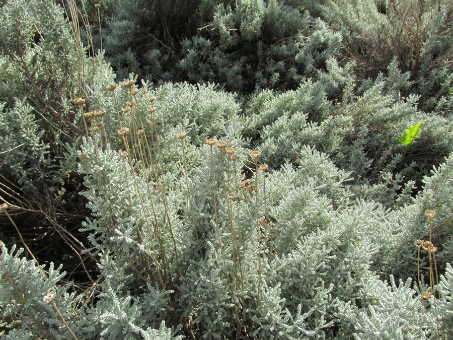

花卉与草本 · 植物界
薰衣草棉 Santolina chamaecyparissus

菊科绵杉菊属常绿半灌木，叶灰绿色、细裂如羽，揉碎散发浓郁香气，花黄色小纽扣状，是地中海风格的香草植物。
- 分类
- 门被子植物门纲木兰纲目菊目科菊科属绵杉菊属
- 栖息环境
- 原产地中海干燥山坡，栽培喜光耐旱、耐寒
- 地理分布
- 原产地中海沿岸；中国北方与长江流域引种栽培
- 保护级别
- 暂无评估；栽培观赏植物，不涉及保护等级
物种志
薰衣草棉为菊科绵杉菊属常绿半灌木，高三十至六十厘米，分枝密集，全株被灰白色绒毛。叶片互生，羽状细裂，裂片细小密集，呈银灰绿色，揉碎后有浓郁的樟脑样香气。头状花序球形，黄色，形似小纽扣，单生于细长花梗顶端，花期六月至八月；瘦果细小，果期秋季。
薰衣草棉原产地中海沿岸的干燥山坡，中国北方和长江流域有引种栽培。它极喜光、耐旱、耐寒，适宜疏松排水良好的石灰质土壤，忌高温高湿和积水。叶色银灰、株型圆整，是地中海风格花境和岩石园的优良材料；枝叶可提取香精，也可作干花和驱虫香包。园艺中常修剪成球形，冬季保持常绿。
形态与习性
- 株高30–60 cm，分枝密集
- 花期6–8 月，头状花序黄色
- 果期秋季，瘦果细小
- 光照极喜光，全日照株型紧凑
- 水分耐旱，忌高温高湿
- 土壤疏松排水良好的石灰质土
- 主要用途花境、岩石园，枝叶提取香精
趣味知识
- 薰衣草棉的叶片银灰细裂，远看像一丛柔软的灰绿色羽毛。
- 它的枝叶揉碎后有樟脑般的气味，地中海居民常用来驱虫。
- 薰衣草棉耐旱怕涝，夏季高温多雨时容易烂根，需注意排水。